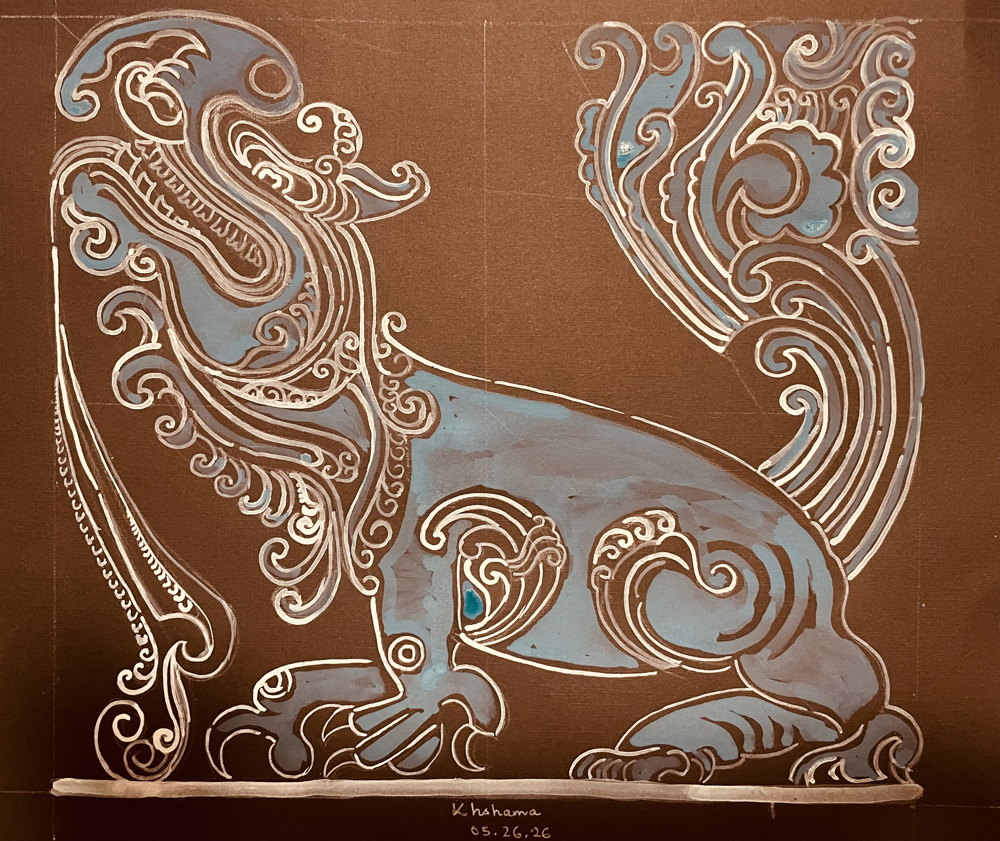
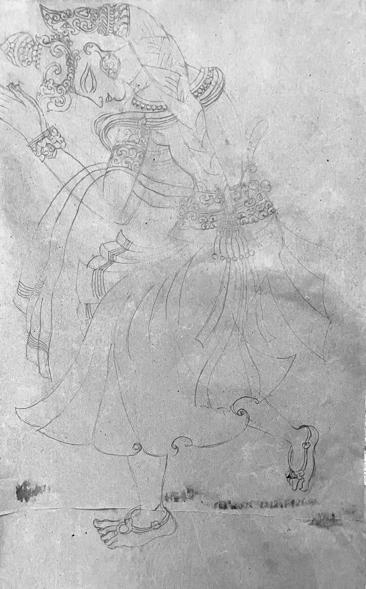
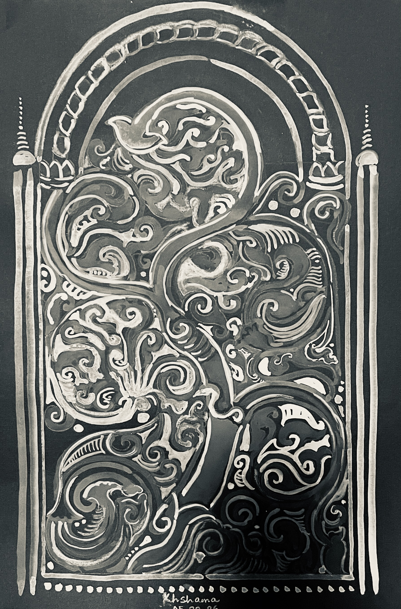

The makara is a mythical sea monster in Indian iconography, symbolizing the life-giving, chaotic, and fertile forces of water. It is most prominently featured as a vehicle (vahana) for deities like the river goddess Ganga and the ocean god Varuna. This painting has been inspired by sculptures of the Hoysala dynasty, commonly seen in temples in Halebid and Belur, India.

Practicing drawing by making a copy of the famous Nandalal Bose's (Bengal School of Art) painting depicting Notir Puja (The Worship of Gauri).

This ornamental depiction of a tree was inspired by designs found in mosques in Ahmedabad, Gujarat. Photographs were shared by Mr. Sudhiranjan Mukherjee, Shantiniketan, India.

Haimonti is trained as a computer scientist, but loves to read, paint, and write in her spare time.